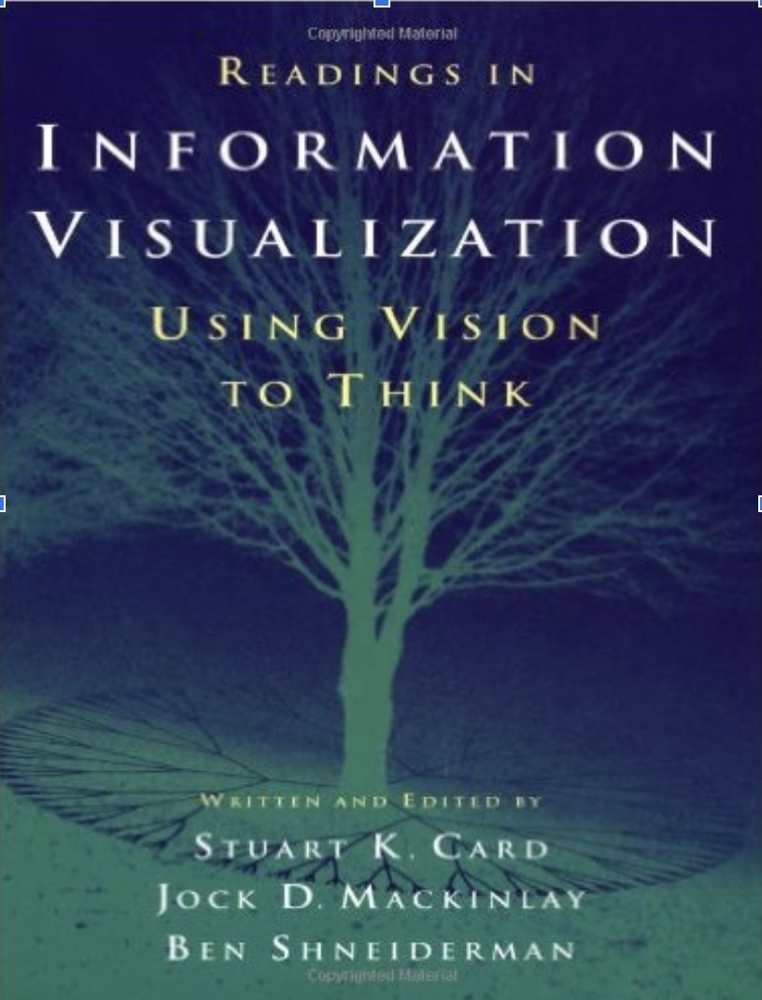
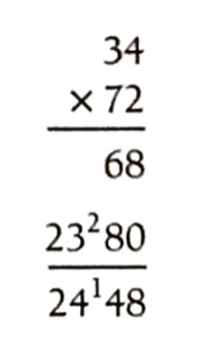
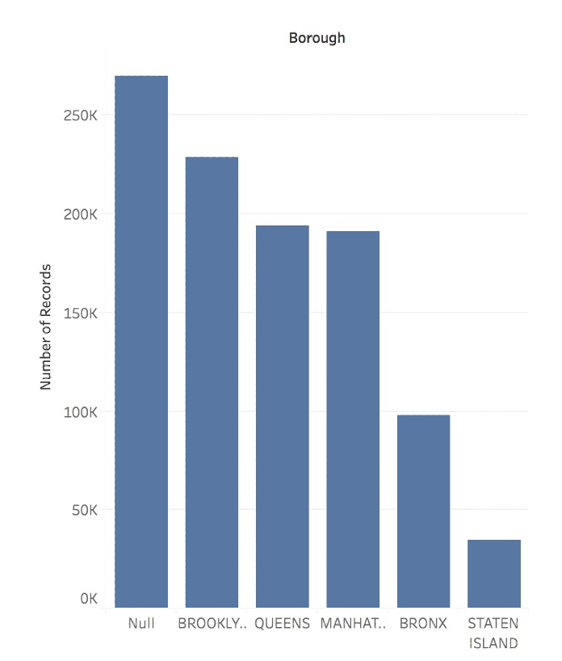
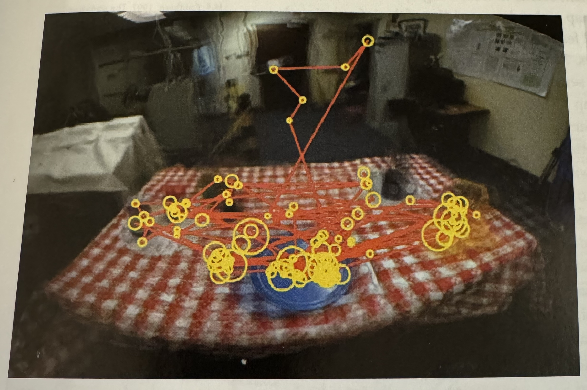
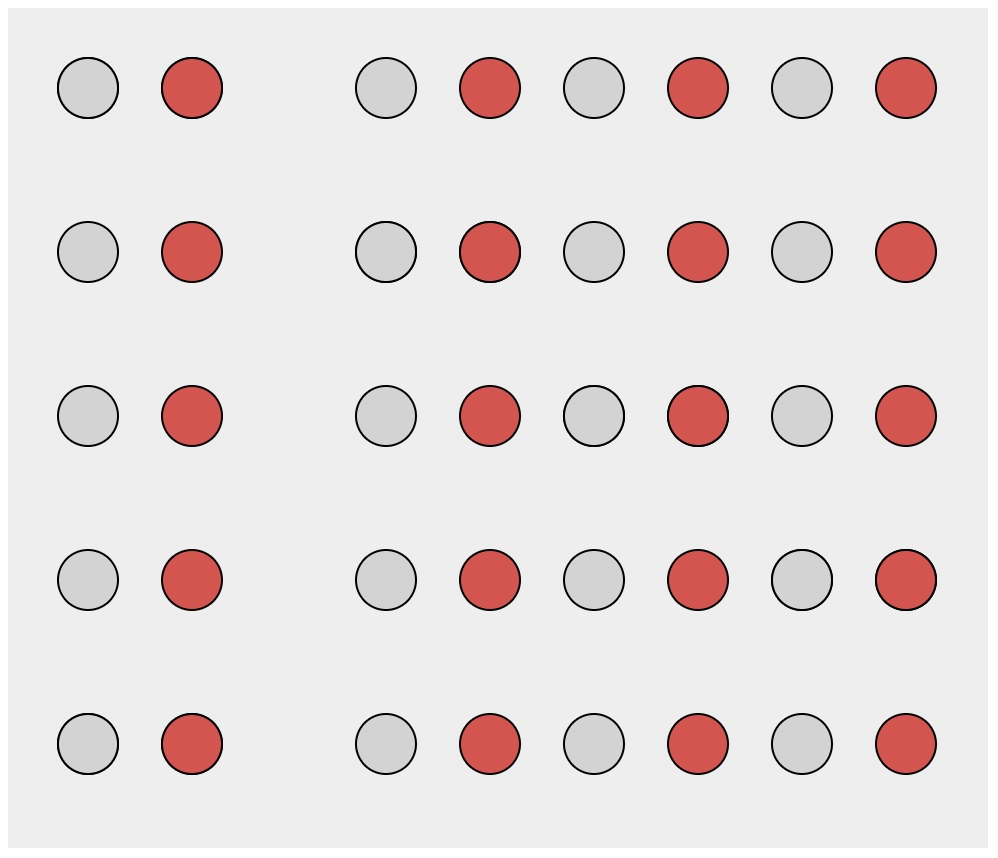

“The use of computer-supported, interactive, visual representations of abstract data to amplify cognition.”

Key Concepts
Computer-Based
Visual Representation
Abstract Data
Interactive
Amplify Cognition
Abstract Data
Data with no obvious/natural visual representation
Abstract Data
Data with no obvious/natural visual representation
Interactive
Users can change what is visualized and how it is visualized.
Amplify Cognition
Solve problems with data with less effort, in a shorter time, and more accurately.
… or even be able to do things it would be impossible to do without a computer and a graphical representation.
Cognitive artifacts: tools that help us think!
Try to multiply 34 x 72 using exclusively your mind …
… now do it again using pen and paper.

Why is it easier?
… because we can store intermediary results in the paper rather than keeping the information in mind. That is, part of the memory is in the world rather than in your head.
Let’s play the “game of 15” …
The “pieces” for the game are the nine digits: 1, 2, 3, 4, 5, 6, 7, 8, 9. Each player takes a digit in turn. Once a digit is taken, it cannot be used by the other player. The first player to get three digits that sum to 15 wins.
Here is a sample game: Player A takes 8. Player B takes 2. Then A takes 4, and B takes 3. A takes 5.
Question 1: Suppose you are now to step in and play for B. What move would you make?
Let’s play a different game: tic-tac-toe
Players alternately place an O or a X in one of nine spaces arranged in a rectangular array. Once a space has been taken, it cannot be changed by either player. The first player to get three symbols in a straight line wins. Suppose player A is X and B is O, and the game has reached the state on the right.
Question 2: Suppose you are now to step in and play an O for B. What move would you make?
Large parts of our brain are devoted to spatial processing
Why use a computer to visualize data?
Why use interaction?
Each visualization can only answer a subset of questions.
With interaction the user can change what is visualized and how to answer a multitude of questions.
Also one cannot visualize everything at once.
How do you assess the quality of a visualization?
Isn’t it subjective? Some people like A, whereas some others like B.
Some visual representations are better than others at solving particular problems …
Digression: Graphical Perception
Graphical Perception Experiment
Graphical Perception Results
Designing effective visualizations requires
Knowing the design space
Being able to compare the solutions
… in turn comparing the solutions requires understanding human perception.
Data Types
The first ingredient in effective visualization is the input data. Data values can represent different forms of measurement.
What kinds of comparisons do those measurements support?
What kinds of visual encodings then support those comparisons?
Nominal (N) or Categorical (C)
Nominal data — also called categorical data — consist of category names.
With nominal data we can compare the equality of values: is value A the same or different than value B? (A = B), supporting statements like “A is equal to B” or “A is not equal to B”.
When visualizing nominal data we should readily perceive if values are the same or different: position, color hue (blue, red, green, etc.), and shape are all reasonable options.
Ordinal (O)
Ordinal data consist of values that have a specific ordering.
With ordinal data we can compare the rank-ordering of values: does value A come before or after value B? (A < B), supporting statements like “A is less than B” or “A is greater than B”.
When visualizing ordinal data, we should perceive a sense of rank-order. Position, size, or color value (brightness) might be appropriate, whereas color hue (which is not perceptually ordered) would be less appropriate.
Quantitative (Q)
With quantitative data we can measure numerical differences among values.
There are multiple sub-types of quantitative data:
For interval data we can measure the distance between points: (A - B).
For ratio data we can also measure proportions or scale factors: (A / B).
Quantitative values can be visualized using position, size, or color value, among other channels. An axis with a zero baseline is essential for proportional comparisons of ratio values, but can be safely omitted for interval comparisons.
Temporal (T)
Temporal values measure time points or intervals. This type is a special case of quantitative values (timestamps) with rich semantics and conventions (i.e., the Gregorian calendar).
Example temporal values include date strings such as “2019-01-04” and “Jan 04 2019”, as well as standardized date-times such as the ISO date-time format: “2019-01-04T17:50:35.643Z”. There are no temporal values in our global development dataset above, as the year field is encoded as an integer.
Spatial (S)
Data that can be shown in a map
Also known as geospatial data, refers to information that identifies the geographic location and characteristics of natural or constructed features and boundaries on the Earth. https://atlan.com/spatial-data/
Data Types Summary
These data types are not mutually exclusive, but rather form a hierarchy: ordinal data support nominal (equality) comparisons, while quantitative data support ordinal (rank-order) comparisons.
Moreover, these data types do not provide a fixed categorization. For example, just because a data field is represented using a number doesn’t mean we have to treat it as a quantitative type! We might interpret a set of ages (10 years old, 20 years old, etc.) as nominal (underage or overage), ordinal (grouped by year), or quantitative (calculate average age).
Fundamental Charts
Widely adopted, effective, useful.
Solve very large percentage of vis problems.
Training ground for more sophisticated graphs.
Bar Chart
Visualize how a quantity distributes across a set of categories.

Line Chart
Visualize how a quantity changes in relation to another quantity (typically time).
Scatter Plot
Visualize how a quantity relate to another quantity.
Matrix
Visualize how a quantity distributes across two categories.
Symbol Map
Visualize how a quantity distributes across two spatial coordinates.
Fundamental Graphs Summary
Scatter Plots + Faceting (without)
Scatter Plots + Faceting (with)
Tidy Data
Goal: organizing data to make visualization easier
“Visual thinking consists of a series of acts of attention, driving eye movements, and tuning our pattern finding circuits”, Colin Aware
The Vision Brain
“Visual thinking consists of a series of acts of attention, driving eye movements, and tuning our pattern finding circuits”, Colin Aware
The Act of Perception
Botton-Up and Top-Down Processes
The Act of Perception
Bottom-up: information is sucessively selected and filtered into patterns as it passes a sequence of stages. Ware outlines three stages: 1) optical nerve to V1 Cortex; 2) use texture and colors to aggregate patterns; 3) visual objects are recognized in the visual working memory.
The Act of Perception
Top-Down: Every stage of bottom-up processing contains a corresponding top-down process. Ware describes the process as “attention”. The dominant principle is that we only get the information that we need, when we need it.

The Implications for Design
“Just-in-time visual queries” (Ware)
“One way to look at the brain operates is a set of nested loops. Outer loops deal with generality while inner loops process detail.” (Ware)
Low-Level Feature Analysis
David Hubel and Torsten Wiesel won Nobel prize for this discovery.
What and Where Pathways
What: identification of objects in environment.
Where: location of objects and eye movement.
What Stands Out (Popout)
Anne Triesman studied how to find patterns and shapes when surrounded by others.
For some configurations the time did not depend on the number of distracters (pre-attentive).
We (the vis designer) bring something to the table.
The human (end user) brings their prior experience.
Design should take such prior experience into account!
What is prior experience? Gestalt laws.
Closure
We can complete incomplete shapes
Implications: visualizations can be unintentionally misleading! Conversely: sometimes only necessary to show sparse set of marks to convey trend (dot plot)
Similarity
Elements with the same visual properties considered to be grouped
Similarity
Elements with the same visual properties considered to be grouped
Proximity
Elements that are of close spatial proximity are somehow grouped.

Proximity
Elements that are of close spatial proximity are somehow grouped.
Enclosure
Explicit visual encoding of enclosure also depicts grouping.
Enclosure
Explicit visual encoding of enclosure also depicts grouping.
Objects connected together are perceived as a group.
Connection
Objects connected together are perceived as a group.
Connection
Objects connected together are perceived as a group.
Connection
Objects connected together are perceived as a group.
Just Noticeable Difference (JND)
In psychophysics a just-noticeable difference or JND is the amount something must be changed in order for a difference to be noticeable, detectable at least half the time.
How accurately a channel can express quantitative information
Graphical Perception
Graphical Perception Experiment
Graphical Perception Results
Accuracy
Position > Length and Angle > Area
Prioritize high-rank channels (with reason)
Do not expect precise judgments from low-rank channels
Effectiveness Effect
Discriminability
How many distinct values can be distinguished within a channel
It depends on:
Channel properties
Spatial arrangement
Size (resolution)
Cardinality
Warning: Do not overestimate the number of values viewers can perceive/discriminate
Discriminability
Many channels, in particular identity channels, can only support a limited number of discriminable levels.
Line width is one of the most limited with perhaps 3 levels.
Using more than 5 or 6 color hues is not recommended.
Similarly, using more than 5 or 6 symbol shapes can create difficulties.
If the number of levels that can be represented by a channel is smaller than the number of attribute levels then some form of meaningful aggregation is needed.
Popout
Tasks performed in less than 200 to 250 milliseconds.
Faster than eyes movement initiation.
Suggest processing by parallel low-level visual system.
Popout
Some features are not pre-attentive
Tasks requiring the use of multiple channels are (most of the time) not preattentive
Separability
Amount of interference between channels
Relative vs Absolute
Color
Vasas et al, PLOS Biology, 2024
Visible Spectrum
Light
Visible range: 390-700nm
Luminance has a large dynamic range:
– 0.00003 – Moonless overcast night sky
– 30 – Sky on overcast day
– 3000 – Sky on clear day
– 16,000 – Snowy ground in full sunlight
Colors result from spectral curves
– dominant wavelength, hue
– brightness, lightness
– purity, saturation
Physiology of the Eye
The Retina
Photoreceptors
Discrete sensors that measure energy – Adaptation
Rods
active at low light levels (scotopic vision)
only one wavelength-sensitivity function
Cones
active at normal light levels (photoptic)
three types: sensitivity functions with different peaks
Cone Sensitivity
Density of Cones
Cones and Rods
Color Stimulus
Color Matching Experiments
Color in Visualization
Trichromacy: Humans perceive colors according to three channels
Most usable and useful way to describe colors (especially for visualization):
10% male and 1% female have some color deficiencies
Oliveira, Manuel. “Towards More Accessible Visualizations for Color-Vision-Deficient Individuals.” Comput. Sci. Eng., 2013.
Today’s Class
Model Interpretation and Explanation
White-box Approaches and Visualizations
Related Research in VIS & AI
Today’s Class
Model Interpretation and Explanation
White-box Approaches and Visualizations
Related Research in VIS & AI
Why Model Interpretation & Explanation?
Model Validation and Improvement
Decision Making and Knowledge Discovery
Gain Confidence and Obtain Trust
Machine-learning-assisted materials discovery using failed experiments
SVM derived decision tree
Researchers firstly built a database of chemistry experiments (new material).
Then they train an SVM to predict whether a new chemistry experiment will be successful.
Then they train a surrogate DT to explain the model to learn more about the experiment.
Why Model Interpretation & Explanation?
https://arxiv.org/abs/1702.08608
Fairness
Privacy
Reliability or Robustness
Causality
Trust
How Do We Interpret Model Behavior?
Methods for machine learning model interpretation can be classified according to various criteria.
White-box / Intrinsic interpretability: Machine learning models that are considered interpretable due to their simple structure, such as short decision trees or sparse linear models. Interpretability is gained by explaining the internal structure of the model.
Black-box / Post-hoc interpretability: Machine learning models that are hard to gain a comprehensive understanding of their inner working (e.g., deep neural networks) are considered black boxes. Interpretability is gained by explaining the model behavior after training.
We discuss the following models that are intrinsically interpretable: - Linear Regression - Generalized Additive Models (GAM) - Tree-based Models - Decision Rules
Linear Regression
Linear models can be used to model the dependence of a regression target y on some features x in a format as below: \[\begin{equation}
y = \beta_0 + \beta_1 x_1 + \ldots + \beta_n x_n + \varepsilon\end{equation}\]
The predicted target \(y\) is a linear combination of the weighted features \(\beta_i x_i\). The estimated linear equation is a hyperplane in the feature/target space (a simple line in the case of a single feature).
The weights specify the slope (gradient) of the hyperplane in each direction.
Linear Regression
Linear Regression: An Example of Housing Price
How do you interpret the influence of each property on the prediction of housing price?
However, as with linear regression, we can manually add interaction terms to the GAM model by including additional predictors of the form \(X_j \times X_k\). In addition we can add low-dimensional interaction functions of the form \(f_{jk}(X_j , X_k)\) into the model.
Some other libraries for PDP visualization: https://scikit-learn.org/stable/modules/partial_dependence.html https://interpret.ml/docs/pdp.html
BREAK
Tree-based Models: Example
A decision tree of diabetes diagnosis
Visualization of Trees
https://treevis.net/ provides a gallery of tree visualization. These trees are used to visualize hierarchical structures, but not just tree-based machine learning models.
VA Systems Using Tree-based Models
BaobabView
It shows the flow of different class, and the class distribution in along the feature values.
VA Systems Using Tree-based Models
iForest
Decision Rules: Different Structures
Clearly see how the decision is made and which rule is more important.
Rule Set: A set of if-then rules.
The final decision is made based on a voting mechanism.
A recent user study shows that “if-then structure without any connecting else statements enables users to easily reason about the decision boundaries of classes.”
Decision Rules: Different Structures
Disjunctive normal form (DNF, OR-of-ANDs) Conjunctive normal form (CNF, AND-of-ORs)
Can different visualizations of rules lead to different level of understanding of rules?
If so, what are the visual factors influence understanding and how they play a role in rule understanding?
Evaluation of Rules
Given a rule below:
If \(X\), then class \(Y\).
Support / Coverage of a rule:
\[\begin{equation}
\text{Support} = \frac{\text{number of instances that match the conditions in } X}{\text{total number of instances}}
\end{equation}\]
Confidence / Accuracy of a rule:
\[\begin{equation}
\text{Confidence} = \frac{\text{number of instances that match conditions in } X \text{ and belong to class } Y}{\text{number of instances that match conditions in } X}
\end{equation}\]
Global Surrogate
Imagine that we have a black-box model (too complex to understand the internal structure), can we use white-box models to help us understand the model behavior of the black-box model?
Global Surrogate
Open the black box by understanding a “surrogate model” that approximate the behavior of the original black-box model.
Goal: Study Model Agnostic Interpretability Methods. These should help to explain any type of ML Models.
Partial Dependence Plot (PDP)
Local Interpretable Model-agnostic Explanations (LIME)
SHAP (SHapley Additive exPlanations)
Examples and materials from Molnar’s book: https://christophm.github.io/interpretable-ml-book/
Bike Rentals (Regression)
This dataset contains daily counts of rented bicycles from the bicycle rental company Capital-Bikeshare in Washington D.C., along with weather and seasonal information. The goal is to predict how many bikes will be rented depending on the weather and the day. The data can be downloaded from the UCI Machine Learning Repository.
Here is the list of features used in Molnar’s book:
Count of bicycles including both casual and registered users. The count is used as the target in the regression task.
The season, either spring, summer, fall or winter.
Indicator whether the day was a holiday or not.
The year, either 2011 or 2012.
Number of days since the 01.01.2011 (the first day in the dataset). This feature was introduced to take account of the trend over time.
Indicator whether the day was a working day or weekend.
The weather situation on that day. One of: clear, few clouds, partly cloudy, cloudy mist + clouds, mist + broken clouds, mist + few clouds, mist light snow, light rain + thunderstorm + scattered clouds, light rain + scattered clouds heavy rain + ice pallets + thunderstorm + mist, snow + mist
Temperature in degrees Celsius.
Relative humidity in percent (0 to 100).
Wind speed in km per hour.
Partial Dependence Plot (PDP)
Shows the marginal effect one or two features have on the predicted outcome of a machine learning model (J. H. Friedman 2001).
Partial Dependence Plot (PDP)
High level idea: marginalizing the machine learning model output over the distributions of the all other features to show the relationship between the feature we are interested in and the predicted outcome.
Partial Dependence Plot (PDP)
Pros
Intuitive
Interpretation is clear
Easy to implement
Cons
Assume independence among features
Can only show few features
Hidden heterogeneous effects from averaging
Local Interpretable Model-agnostic Explanations (LIME)
Training local surrograte models to explain individual predictions
https://arxiv.org/pdf/1602.04938.pdf
Local Interpretable Model-agnostic Explanations (LIME)
The idea is quite intuitive.
First, forget about the training data and imagine you only have the black box model where you can input data points and get the predictions of the model. You can probe the box as often as you want. Your goal is to understand why the machine learning model made a certain prediction. LIME tests what happens to the predictions when you give variations of your data into the machine learning model.
LIME generates a new dataset consisting of perturbed samples and the corresponding predictions of the black box model.
On this new dataset LIME then trains an interpretable model, which is weighted by the proximity of the sampled instances to the instance of interest. The interpretable model can be anything from the interpretable models chapter, for example Lasso or a decision tree. The learned model should be a good approximation of the machine learning model predictions locally, but it does not have to be a good global approximation. This kind of accuracy is also called local fidelity.
Local Interpretable Model-agnostic Explanations (LIME)
https://arxiv.org/pdf/1602.04938.pdf
Local Interpretable Model-agnostic Explanations (LIME)
Algorithm
Pick an input that you want an explanation for.
Sample the neighbors of the selected input (i.e. perturbation).
Train a linear classifier on the neighbors.
The weights on the linear classifier is the explanation.
Local Interpretable Model-agnostic Explanations (LIME)
Random forest predictions given features x1 and x2.
Predicted classes: 1 (dark) or 0 (light).
Local Interpretable Model-agnostic Explanations (LIME)
Instance of interest (big yellow dot) and data sampled from a normal distribution (small dots).
Local Interpretable Model-agnostic Explanations (LIME)
Assign higher weight to points near the instance of interest. I.e., \(weight(p) = \sqrt{\frac{e^{-d^2}}{w^2}}\) where \(d\) is the distance between \(p\) and the instantce of interest, and \(w\) is the kernel width (self-defined).
Local Interpretable Model-agnostic Explanations (LIME)
Use both the samples and sample weights to train a linear classifier.
Signs of the grid show the classifications of the locally learned model from the weighted samples. The red line marks the decision boundary (P(class=1) = 0.5).
The official implementation uses a Ridge Classifier as the linear model for explanation.
Local Interpretable Model-agnostic Explanations (LIME)
Let us look at a concrete example. We go back to the bike rental data and turn the prediction problem into a classification: After taking into account the trend that the bicycle rental has become more popular over time, we want to know on a certain day whether the number of bicycles rented will be above or below the trend line. You can also interpret “above” as being above the average number of bicycles, but adjusted for the trend.
First we train a random forest with 100 trees on the classification task. On what day will the number of rental bikes be above the trend-free average, based on weather and calendar information?
The explanations are created with 2 features. The results of the sparse local linear models trained for two instances with different predicted classes:
Local Interpretable Model-agnostic Explanations (LIME)
Pros
Explanations are short (= selective) and possibly contrastive.
we can control the sparsity of weight coefficients in the regressions method.
Very easy to use.
Cons
Unstable results due to sampling.
Hard to weight similar neighbors in a high dimensional dataset.
Many parameters for data scientists to hide biases.
SHAP (SHapley Additive exPlanations)
Examples and materials from Molnar’s new book: https://christophmolnar.com/books/shap/
SHAP (Lundberg and Lee 2017a) is a game-theory-inspired method created to explain predictions made by machine learning models. SHAP generates one value per input feature (also known as SHAP values) that indicates how the feature contributes to the prediction of the specified data point.
A Short History of Shapley Values and SHAP
1953: The introduction of Shapley values in game theory (by Lloyd Shapley).
2010: The initial steps toward applying Shapley values in machine learning
original paper contained NO code!
2017: The advent of SHAP (by Lundberg and Lee), a turning point in machine learning.
Theory of Shapley Values
Who’s going to pay for that taxi?
Alice, Bob, and Charlie have dinner together and share a taxi ride home. The total cost is $51. The question is, how should they divide the costs fairly?
Theory of Shapley Values
The marginal contribution of a player to a coalition is the value of the coali- tion with the player minus the value of the coalition without the player. In the taxi example, the value of a coalition is equal to the cost of the ride as detailed in the above table. Therefore, the marginal contribution of, for instance, Charlie to a taxi already containing Bob is the cost of the taxi with Bob and Charlie, minus the cost of the taxi with Bob alone.
Theory of Shapley Values
Theory of Shapley Values
How to average these marginal contributions per passenger?
One way to answer this question is by considering all possible permutations of Alice, Bob, and Charlie. There are 3! = 3 * 2 * 1 = 6 possible permutations of passengers:
Alice, Bob, Charlie
Alice, Charlie, Bob
Bob, Alice, Charlie
Charlie, Alice, Bob
Bob, Charlie, Alice
Charlie, Bob, Alice
We can use these permutations to form coalitions, for example, for Alice.
Theory of Shapley Values
In two of these cases, Alice was added to an empty taxi, and in one case, she was added to a taxi with only Bob. By weighting the marginal contributions accordingly, we calculate the following weighted average marginal contribution for Alice, abbreviating Alice, Bob, and Charlie to A, B, and C:
Theory of Shapley Values
for Bob:
for Charlie:
Calculating Shapley values
The Shapley value is the weighted average of a player’s marginal contribu- tions to all possible coalitions.
The axioms behind Shapley values
Efficiency: The sum of the contributions must precisely add up to the payout.
Symmetry: If two players are identical, they should receive equal contributions.
Dummy or Null Player: The value of a player who doesn’t contribute to any coalition is zero.
Additivity: In a game with two value functions, the Shapley values for the sum can be expressed as the sum of the Shapley values.
These four axioms ensure the uniqueness of the Shapley values.
From Shapley Values to SHAP
Consider the following scenario: You have trained a machine learning model \(f\) to predict apartment prices.
From Shapley Values to SHAP
We want to evaluate the effort of cat-banned
From Shapley Values to SHAP
We want to evaluate the effort of cat-banned
Interpreting SHAP values
The Shapley value can be misinterpreted. The Shapley value of a feature value is not the difference of the predicted value after removing the feature from the model training. The interpretation of the Shapley value is: Given the current set of feature values, the contribution of a feature value to the difference between the actual prediction and the mean prediction is the estimated Shapley value.
The Shapley value is the wrong explanation method if you seek sparse explanations (explanations that contain few features). Explanations created with the Shapley value method always use all the features. Humans prefer selective explanations, such as those produced by LIME. LIME might be the better choice for explanations lay-persons have to deal with.
(From Molnar’s book)
SHAP (SHapley Additive exPlanations)
Pros
Fairly distributed feature importance to a prediction
Contrastive explanations (can compare an instance to a subset or even to a single data point)
Solid theory
Cons
A lot of computing time
Not sparse explanations (every feature is important)
HERE is an excellent talk by t-SNE creator: video link
Digression: Point Set Surfaces
Wattenberg, Viégas, and Johnson, 2016
https://distill.pub/2016/misread-tsne/
t-SNE
Wattenberg et al writes “A popular method for exploring high-dimensional data is something called t-SNE… it has an almost magical ability to create compelling two-dimensonal “maps” from data with hundreds or even thousands of dimensions. Although impressive, these images can be tempting to misread.”
Wattenberg: “The algorithm is non-linear and adapts to the underlying data, performing different transformations on different regions. Those differences can be a major source of confusion.”
Watternberg: “A second feature of t-SNE is a tuneable parameter, “perplexity,” which says (loosely) how to balance attention between local and global aspects of your data. The parameter is, in a sense, a guess about the number of close neighbors each point has. The perplexity value has a complex effect on the resulting pictures.”
t-SNE
“Those hyperparameters really matter”
“The image for perplexity 100, with merged clusters, illustrates a pitfall: for the algorithm to operate properly, the perplexity really should be smaller than the number of points.”
t-SNE
“Each of the plots above was made with 5,000 iterations with a learning rate (often called “epsilon”) of 10, and had reached a point of stability by step 5,000. How much of a difference do those values make?”
t-SNE
“Cluster sizes in a t-SNE plot mean nothing”
“By size we mean bounding box measurements, not number of points.”
“The t-SNE algorithm adapts its notion of “distance” to regional density variations in the data set. As a result, it naturally expands dense clusters, and contracts sparse ones, evening out cluster sizes.”
t-SNE
“Distances between clusters might not mean anything”
“The next diagrams show three Gaussians of 50 points each, one pair being 5 times as far apart as another pair.”
t-SNE
“Random noise doesn’t always look random.”
“The next diagrams show genuinely random data, 500 points drawn from a unit Gaussian distribution in 100 dimensions. The left image is a projection onto the first two coordinates.”
t-SNE
“For topology, you may need more than one plot”
“The plots below show two groups of 75 points in 50 dimensional space. Both are sampled from symmetric Gaussian distributions centered at the origin, but one is 50 times more tightly dispersed than the other. The “small” distribution is in effect contained in the large one.”
Topomap (Doraiswamy et al)
Topomap preserves the 0-dimensional persistence diagram of the Rips filtration of the high-dimensional data.
https://pair-code.github.io/understanding-umap/
UMAP
Coenen and Pearce: “UMAP is fast, scaling well in terms of both dataset size and dimensionality. … UMAP can project the 784-dimensional, 70,000-point MNIST dataset in less than 3 minutes, compared to 45 minutes for scikit-learn’s t-SNE implementation. Additionally, UMAP tends to better preserve the global structure of the data.”
UMAP
“UMAP, at its core, works very similarly to t-SNE - both use graph layout algorithms to arrange data in low-dimensional space.”
UMAP parameters
n_neighbors - the number of approximate nearest neighbors used to construct the initial high-dimensional graph.
min_dist - the minimum distance between points in low-dimensional space.
UMAP parameters
n_neighbors - the number of approximate nearest neighbors used to construct the initial high-dimensional graph.
min_dist - the minimum distance between points in low-dimensional space.
UMAP parameters
n_neighbors - the number of approximate nearest neighbors used to construct the initial high-dimensional graph.
min_dist - the minimum distance between points in low-dimensional space.
UMAP
“However, it’s important to note that, because UMAP and t-SNE both necessarily warp the high-dimensional shape of the data when projecting to lower dimensions, any given axis or distance in lower dimensions still isn’t directly interpretable in the way of techniques such as PCA.”
“Most dimensionality reduction algorithms fit into either one of two broad categories: Matrix factorization (such as PCA) or Graph layout (such as t-SNE).”
“At its core, UMAP is a graph layout algorithm, very similar to t-SNE, but with a number of key theoretical underpinnings that give the algorithm a more solid footing.”
UMAP
What about user interaction?
Topological Data Analysis
What is topology?
Topology studies the shape of mathematical objects
Unlike Geometry, it is not concerned with sizes, angles, nor coordinates
It is concerned with the connectivity (or lack of) between different “parts” of the object
Two objects are topologically equivalent if we can transform one into another with continuous transformations (without tearing the object)
What is topology?
Why topology?
Since topology analyzes the shape while discarding possibly unnecessary information, it is frequently used for analyzing high-dimensional objects
Topological data analysis (TDA) uses techniques from topology to analyze datasets
To do this, it is necessary to construct topological representations of the dataset’s points
Why topology? - An example in chemistry
Why topology? - An example in chemistry
Why topology? - An example in chemistry
Why topology? - An example in biology
Betti numbers
The \(d^{th}\) Betti number counts the number of \(d\)-dimensional holes. It can be used to distinguish between spaces.
\(\beta_0(X)\) Connected components in X
\(\beta_1(X)\) Tunnels or holes in X
\(\beta_2(X)\) Voids in X
First Example - Map
What is a peak?
First Example - Map
What is a peak?
First idea: Using local maximum
First Example - Map
What is a peak?
Second idea: flooding
First Example - Map
What is a peak?
Second idea: flooding
First Example - Map
What is a peak?
Second idea: flooding
First Example - Map
What is a peak?
Second idea: flooding
First Example - Map
What is a peak?
Second idea: flooding
First Example - Map
What is a peak?
Second idea: flooding
First Example - Map
What is a peak?
Second idea: flooding
First Example - Map
The island \(I\) appears at sea level \(b\) (its birth time)…
First Example - Map
The island \(I\) appears at sea level \(b\) (its birth time)…
and disapears at seas level \(d\) (its death time) at local maximum \(x\).
The point \(x\) is a peak if the persistence\(:= d-b\) of the island \(I\) is larger than \(91\)m (=\(300\)ft).
First Example - Map
The persistence diagram (PD) of the elevation function is the collection of the points \((b,d)\), where \((b,d)\) corresponds to the birth/death of an island.
First Example - Map
The persistence diagram (PD) of the elevation function is the collection of the points \((b,d)\), where \((b,d)\) corresponds to the birth/death of an island.
Second Example
Second Example
Second Example
Second Example
Second Example
Second Example
Second Example
Second Example
Second Example
Second Example
Second Example
Second Example
Second Example
Persistence diagram
Distance between persistence diagrams
If we have more than one persistence diagram, how do we measure the distance between them?
Distance between persistence diagrams
We place both in the same diagram
Distance between persistence diagrams
We place both in the same diagram
Get the optimal pair matching between the points (including the diagonal)
Distance between persistence diagrams
We place both in the same diagram
Get the optimal pair matching between the points (including the diagonal)
The bottleneck distance between them will be the largest pair distance
Simplicial complexes
Definition
We call a non-empty family of sets \(K\) with a collection of non-empty subsets \(S\) an abstract simplicial complex if:
\(\{v\} \in S\) for all \(v \in K\)
If \(\sigma \in S\) and \(\tau \subseteq \sigma\), then \(\tau \in K\).
Terminology
The elements of a simplicial complex \(K\) are called simplices. A \(k\)-simplex consists of \(k+1\) verticies.
Simplicial complexes
Example
Simplicial complexes can be decomposed into their skeletons, which only contain simplices of a certain dimension.
Simplicial complexes
Example
Simplicial complexes can be decomposed into their skeletons, which only contain simplices of a certain dimension.
Simplicial complexes
Example
Simplicial complexes can be decomposed into their skeletons, which only contain simplices of a certain dimension.
Simplicial complexes
Example
Simplicial complexes can be decomposed into their skeletons, which only contain simplices of a certain dimension.
Simplicial complexes
Non-example
This is not a simplicial complex because some higher-dimensional simplices do not intersect in a lower dimensional one!
Simplicial complexes
Example
Notice that \(K\) does not contain the 2-simplex \(\{a,b,c\}\)
From points clouds to simplicial complexes
From points clouds to simplicial complexes
From points clouds to simplicial complexes
Strategy 1: Triangulation
Constructing the data’s simplicial complex
Vietoris-Rips construction
Definition
Given a set of points \(\mathcal{X} = \{x_1,\dots,x_n\}\) and a metric \(dist\) (such as the Euclidean distance), pick a threshold \(\epsilon\) and build the Vietoris-Rips complex \(\mathcal{V}_\epsilon\) defined as:
Equivalently, \(\mathcal{V}_\epsilon\) contains all simplices whose diameter is less than or equal to \(\epsilon\).
Vietoris-Rips construction
Example
Draw Euclidean balls (circles) of diameter \(\epsilon\) and create a \(k\)-simplex \(\sigma\) for each subset of \(k+1\) points that intersect pairwise.
Some details about this construction
This construction dates back to a 1927 article by Leopold Vietoris\(^1\)
A 2010 paper by Afra Zomorodian\(^2\) describes several construction algorithms
The basic idea is to build higher-dimensional simplices inductively from lower-dimensional ones
In the worst case, the Vietoris-Rips complex will contain all \(2^n\) subsets of its underluing point clous \(\mathcal{X}\)!
The betti numbers of a Vietoris-Rips complex
Example
Issues with this approach
How to pick \(\epsilon\)?
There might not be one ‘correct’ value for \(\epsilon\).
Computationally inefficient
Picking \(\epsilon\) - Topological Persistence
Intuition: Go through all scales and track the topological features
Picking \(\epsilon\) - Topological Persistence
Intuition: Go through all scales and track the topological features
Picking \(\epsilon\) - Topological Persistence
Intuition: Go through all scales and track the topological features
Picking \(\epsilon\) - Topological Persistence
Intuition: Go through all scales and track the topological features
Picking \(\epsilon\) - Topological Persistence
Intuition: Go through all scales and track the topological features
Strategy 2: Data skeleton
The Mapper Algortihm
Math World
We start in “Math World”, where
We draw the data as a smooth manifold
Functions that appear are smooth or continuous
We will not need either of these assumptions once we are in the “Data World”.
Even more importantly, data in the real world is never like this.
Math World
Math World
Math World
Math World
Math World
Math World
Math World
Math World
Math World
Math World
Math World
Math World
Math World
Math World
Why is this useful?
We get “easy” understanding of the localizations of quantities of interest.
Why is this useful?
We get “easy” understanding of the localizations of quantities of interest.
Why is this useful?
We get “easy” understanding of the localizations of quantities of interest.
Why is this useful?
We get “easy” understanding of the localizations of quantities of interest.
Why is this useful?
We get “easy” understanding of the localizations of quantities of interest.
Why is this useful?
We get “easy” understanding of the localizations of quantities of interest.
Why is this useful?
We get “easy” understanding of the localizations of quantities of interest.
Why is this useful?
We get “easy” understanding of the localizations of quantities of interest.
Lenses inform us where in the space to look for phenomena.
For easy localizations many different lenses will be informative.
For hard (= geometrically distributed) localizations we have to be more careful. But even then, we frequently get incremental knowledge from a poorly chosen lens.
Data World - Mapper
We need to adjust the “Math World” view to bring the algorithm into the “Data World”
We replace points with open sets in the range of the lens
We replace “connected component of the inverse image” with “clusters in the inverse image”
We connect clusters (nodes) with an edge if they share points in common.
Data World - Mapper
Data World - Mapper
Data World - Mapper
Data World - Mapper
Data World - Mapper
Data World - Mapper
Data World - Mapper
Data World - Mapper
Data World - Mapper
Data World - Mapper
Data World - Mapper
Data World - Mapper
Data World - Mapper
To look further
References
For more information about the persistence diagram, see Vincent Divol’s CDS Lunch Seminar presentation “Quantifying the topology of datasets using Topological Data Analysis”
Edelsbrunner, Herbert, and John L. Harer. Computational topology: an introduction. American Mathematical Society, 2022.
Dey, Tamal Krishna, and Yusu Wang. Computational topology for data analysis. Cambridge University Press, 2022.
Carlsson, Gunnar, and Mikael Vejdemo-Johansson. Topological data analysis with applications. Cambridge University Press, 2021.
Introductory paper:
Chazal, Frédéric, and Bertrand Michel. “An introduction to topological data analysis: fundamental and practical aspects for data scientists.” Frontiers in artificial intelligence 4 (2021): 108.
References
TDA in Python:
For overall TDA data structures and algorithms: GUDHI (both C++ and Python) or scikit-tda
For a faster implementation of the Vietoris-Rips: Ripser.py
For a faster implementation of the Mapper: KeplerMapper
For an open-source library and software collection for topological data analysis and visualization: Topology ToolKit


 Clearly see how the decision is made and which rule is more important.
Clearly see how the decision is made and which rule is more important.


 Overall Accuracy on Test Set: 80%
Overall Accuracy on Test Set: 80%